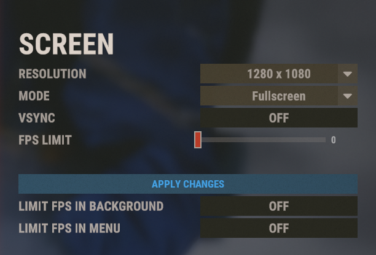
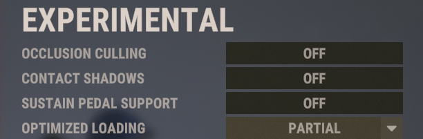
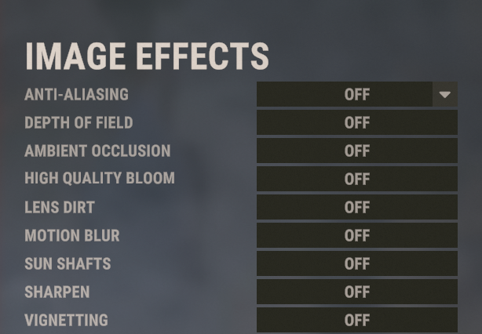
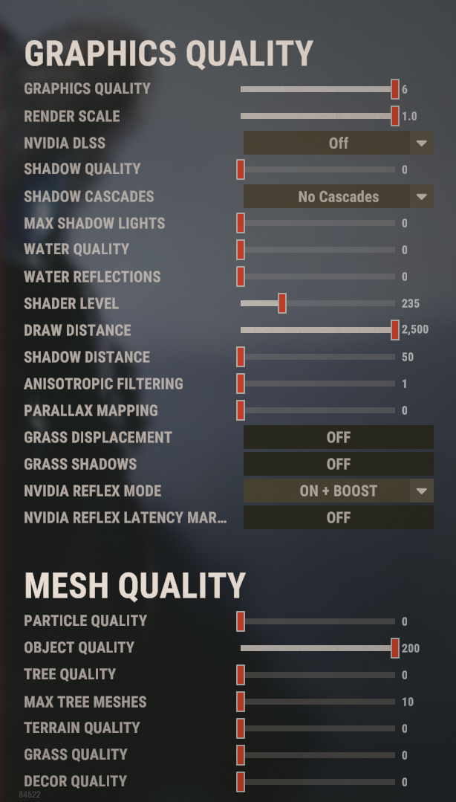
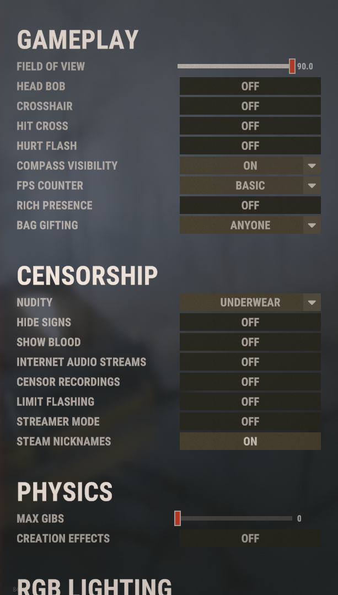
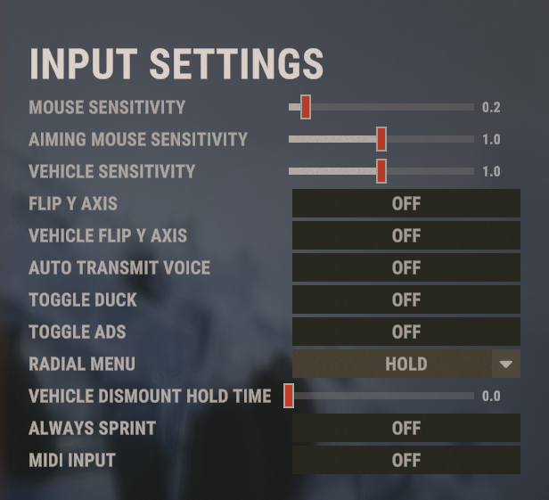
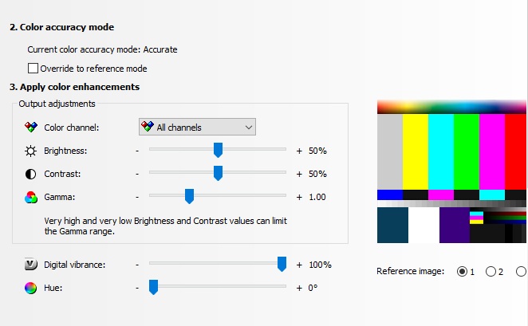

YRODIK //UWU
WINDOWS
DISCORD
TEXT3
REAPER
> RUST
FILES/LINKS
VKONTAKTE
GITHUB
Rust Video Settings.
   
Rust Settings.
 
Video Settings.

sensitivity - .18
dpi - 1600
res - 1280x1080
launch options - -headlerp 100 -high
zoom bind - bind c +graphics.fov 90;graphics.fov 70
audio.master 3
game sounds 1
:3